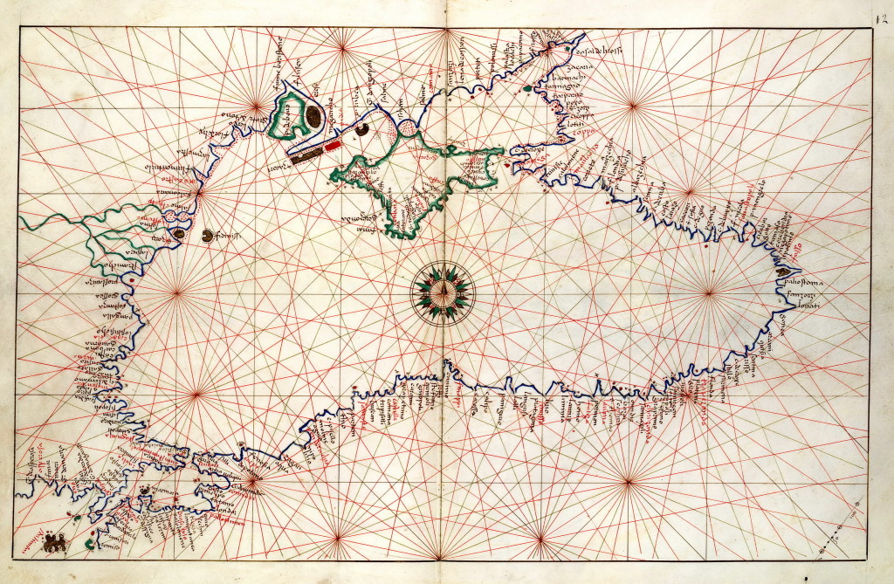
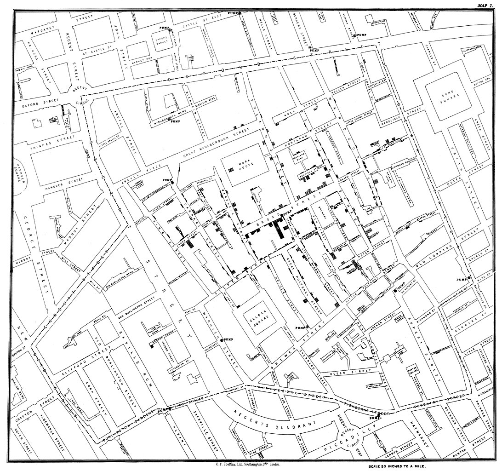

Что такое геоинформационные системы?
Геоинформатика и геоинформационные системы. Лекция 1





Основание компании Esri
В 1969 Джек Дэнджермонд (Jack Dangermond), сотрудник Гарвадской лаборатории компьютерной графики, и его жена Лаура основали Институт исследований экологических систем (Environmental Systems Research Institute), Inc. (Esri).
I had some notion of applying computer mapping to my profession
В настоящее время ESRI около 40% рынка7 геоинформационных систем.

Отечественные ГИС
В настоящее время существует созданный Минстроем Перечень российского программного обеспечения для субъектов градостроительной деятельности в соответствии с данными единого реестра российского программного обеспечения для ЭВМ

ГИС Панорама
Официальный сайт: http://www.gisinfo.ru/


Сноски
Кошкарев А.В. Картография и геоинформатика: пути взаимодействия // Изв. АН СССР. Сер. геогр. 1990. No1. С.32.
Геоинформатика: Учеб. для студ. вузов / Е.Г.Капралов, А. В. Кошкарев, В. С. Тикунов и др.; Под ред. В. С.Тикунова. — М : Издательский центр «Академия», 2005. — 480 с.
ГОСТ Р 52438-2005 Географические информационные системы. Термины и определения
Charles Picquet Maps One of the First Applications of Spatial Analysis in Epidemology https://www.historyofinformation.com/detail.php?entryid=4237
https://florencekelley.northwestern.edu/historical/hullhouse/
Forbes profile. Jack Dangermond https://www.forbes.com/profile/jack-dangermond/?sh=726658156c6e
Тедикова А.А., Климоченков М.Д., Мельниченко И.А., Красноцветов М.А., Ус С.С., Кутлыев И.И., Щёкина М.В. История зарождения и развития геоинформатики как науки. Горная промышленность. 2024;(3):90–99. https://doi.org/10.30686/1609-9192-2024-3-90-99